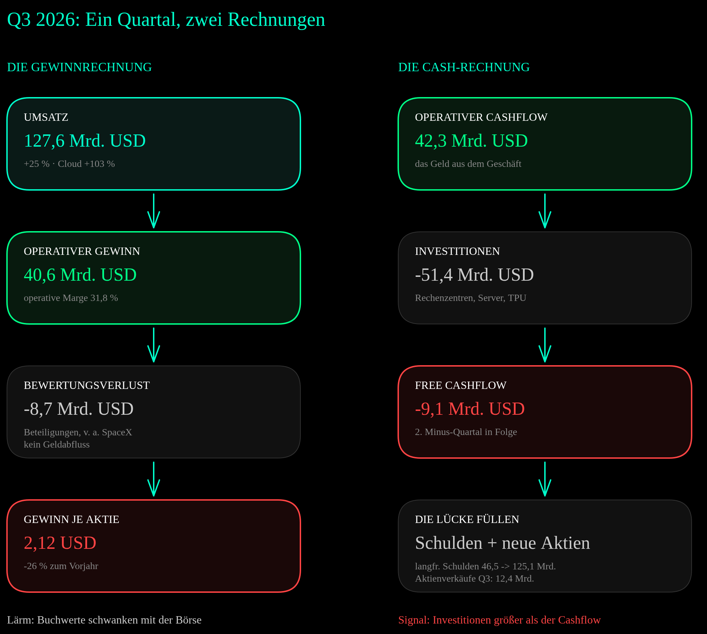
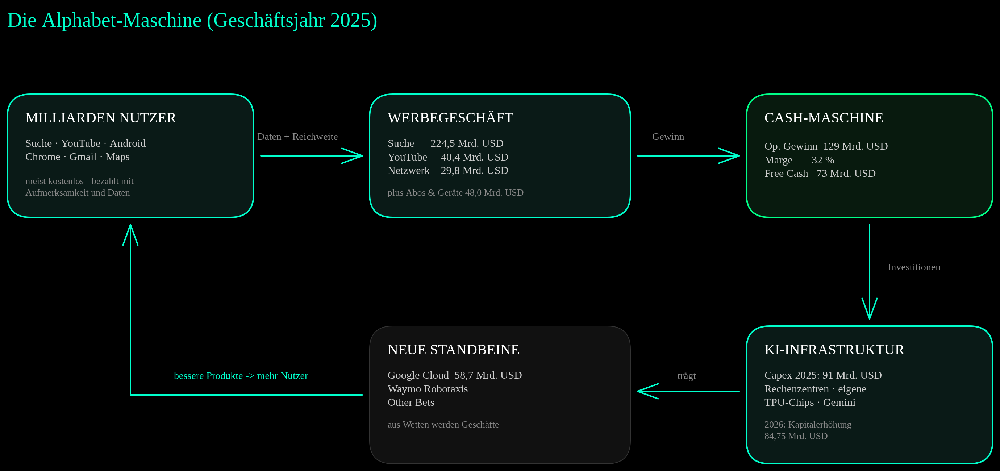
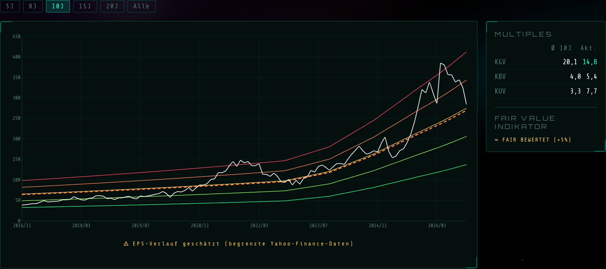
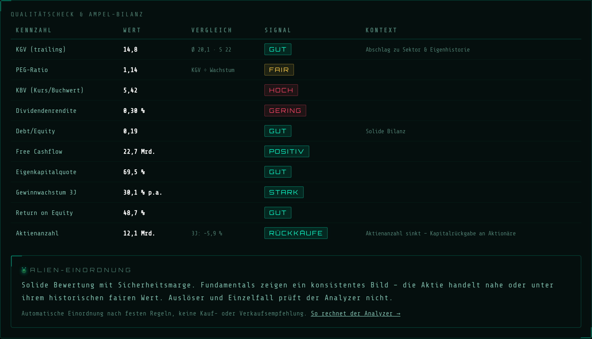
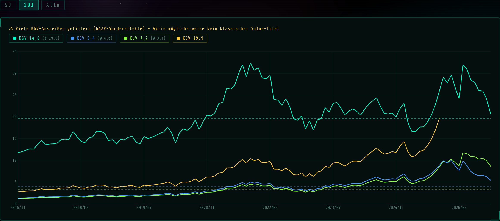
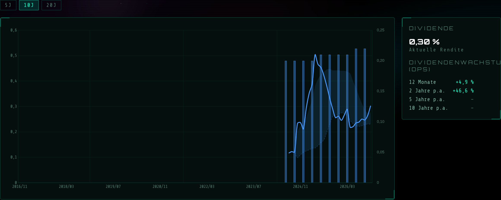

Am Abend des 28. Oktober 2026 legte Alphabet Zahlen vor, für die andere Konzerne töten würden: Umsatz +25 %, die Cloud mehr als verdoppelt, ein operativer Gewinn von 40,6 Mrd. USD. Am nächsten Tag verlor die Aktie 12,6 % — der schlechteste Handelstag seit dem Börsengang 2004, rund eine halbe Billion US-Dollar Börsenwert an einem einzigen Donnerstag. Seit dem Rekordhoch im Mai ist die Aktie damit fast 30 % zurückgekommen. Diese Analyse ersetzt die Fassung vom August und klärt eine Frage: Was davon ist Lärm, und was ist Signal?
„Die Maschine läuft schneller als je zuvor. Der Markt stellt eine andere Frage: Wie viel davon kommt noch beim Eigentümer an?"
1) Kurzüberblick
| Kennzahl | Wert |
|---|---|
| Ticker | GOOGL (NASDAQ, Class A) |
| Kurs (Schluss 29.10.2026) | 283,82 USD |
| Abstand zum Rekordhoch | −29,5 % (402,62 USD am 13.05.2026) |
| Marktkapitalisierung | ~3,5 Bio. USD |
| KGV (trailing) | 14,8 — verzerrt, siehe Abschnitt 6 |
| KGV ohne Bewertungseffekte | ~26 [SCHÄTZUNG, eigene Rechnung] |
| EPS (TTM) | 19,15 USD — rund 8 USD davon Bewertungsgewinne |
| Umsatz (TTM) | 471,1 Mrd. USD |
| Free Cashflow (TTM) | 19,7 Mrd. USD (Gesamtjahr 2025: 73,3 Mrd.) |
| Dividendenrendite | 0,31 % (0,22 USD je Quartal) |
| Sektor | Communication Services / Internet |
Alphabet ist die Holding hinter Google: Suche, YouTube, Android, Chrome, Gmail und Maps, dazu Google Cloud als drittgrößter Cloud-Anbieter und Waymo als Robotaxi-Betreiber in 15 US-Städten. Knapp 90 % aller Suchanfragen weltweit laufen über Google (StatCounter, September 2026). Knapp zwei Drittel des Umsatzes stammen aus Werbung.
Was am 29. Oktober passiert ist
| Datum | Ereignis | Kurs GOOGL |
|---|---|---|
| 13.05.2026 | Rekord-Schlusskurs | 402,62 USD |
| 02.06.2026 | Kapitalerhöhung über 84,75 Mrd. USD | −3,9 % |
| 23.07.2026 | Q2-Zahlen: Investitionsprognose angehoben, erstmals negativer Free Cashflow | −7,1 % |
| 28.10.2026 | Schlusskurs vor den Q3-Zahlen | 324,89 USD |
| 29.10.2026 | Tag nach den Q3-Zahlen | −12,6 % auf 283,82 USD |
Der Absturz hat drei Ursachen. Nur eine davon ist Buchhaltung.
- Der Gewinn je Aktie — überwiegend Lärm: 2,12 USD statt der erwarteten rund 3 USD. Den größten Teil der Lücke erklärt ein Bewertungsverlust von 8,7 Mrd. USD auf Beteiligungen, laut Alphabet vor allem auf die inzwischen börsennotierte SpaceX-Beteiligung. Das ist kein Geldabfluss, sondern ein gesunkener Buchwert. Er drückte das Ergebnis um 0,55 USD je Aktie. Ganz ohne diesen Effekt wären es 2,67 USD gewesen — immer noch unter den 3,02 USD, die Analysten erwartet hatten (LSEG).
- Der Free Cashflow — Signal: −9,1 Mrd. USD im Quartal, das zweite Minus in Folge. Das Geschäft erwirtschaftete 42,3 Mrd. USD operativen Cashflow, die Investitionen lagen bei 51,4 Mrd. USD. Für 2027 kündigt Alphabet „deutlich“ höhere Investitionen an.
- Die Suche — Signal mit Fragezeichen: Der Suchumsatz wuchs nur noch um 12 %, nach 17 % im Vorquartal. Chief Business Officer Philipp Schindler nennt Währungseffekte als größten Grund, daneben Händler aus dem Asien-Pazifik-Raum, das Ende des WM-Effekts aus dem zweiten Quartal und den KI-Suchmodus „AI Mode“, der bislang weniger Werbeumsatz pro Anfrage bringt. Der Markt liest daraus etwas anderes: den ersten messbaren Hinweis, dass KI am Kerngeschäft nagt.

Ein Quartal, zwei Rechnungen: Der Gewinn fällt wegen eines Buchverlusts, der Free Cashflow, weil die Investitionen den Cashflow übersteigen. Das erste ist Lärm, das zweite Signal. ↗ Zum Vergrößern klicken
2) Geschäftsmodell & Segmente
Das Geschäftsmodell ist ein Kreislauf, keine Liste. Milliarden Menschen nutzen kostenlose Produkte und bezahlen mit Aufmerksamkeit und Daten. Diese Reichweite wird an Werbetreibende verkauft. Der Gewinn fließt in KI-Infrastruktur, die die Produkte besser macht — und nebenbei neue Standbeine aufbaut. An der Struktur hat sich seit August nichts geändert, wohl aber an den Größenverhältnissen.

Die Alphabet-Maschine als Kreislauf (Zahlen Geschäftsjahr 2025): Gratis-Produkte erzeugen Reichweite, Werbung erzeugt Cash, Cash erzeugt Infrastruktur — und die trägt die neuen Standbeine. ↗ Zum Vergrößern klicken
Das dritte Quartal 2026 nach Umsatzzeilen (Mrd. USD):
| Umsatzzeile | Q3 2025 | Q3 2026 | Veränderung |
|---|---|---|---|
| Google Search & other | 56,6 | 63,4 | +12 % |
| YouTube-Werbung | 10,3 | 11,2 | +9 % |
| Google-Werbenetzwerk | 7,4 | 7,5 | +1 % |
| Abos, Plattformen & Geräte | 12,9 | 14,3 | +11 % |
| Google Cloud | 15,2 | 30,7 | +103 % |
| Other Bets | 0,3 | 0,4 | +8 % |
| Gesamt | 102,3 | 127,6 | +25 % |
Die Verschiebung ist deutlich: Vor einem Jahr stand die Cloud für 15 % des Umsatzes, jetzt für 24 %. Das Werbegeschäft wächst noch, aber nur noch knapp zweistellig. Das Wachstum des Konzerns kommt inzwischen zu einem großen Teil aus der Cloud.
Neu im Geschäftsmodell: TPU-Systeme. Alphabet vermietet seine selbst entwickelten KI-Chips (TPUs) nicht mehr nur in der eigenen Cloud, sondern verkauft komplette Systeme aus Hardware, Netzwerk und Software. Zu den TPU-Kunden zählen unter anderem Anthropic und Apple, für die Lieferung arbeitet Google mit Partnern wie Oracle zusammen. Die Vorbereitung sieht man in der Bilanz: Der Lagerbestand stieg seit Jahresbeginn von 2,4 auf 13,3 Mrd. USD, vor allem Hardware für TPU-Systeme. Einen nennenswerten Umsatzanstieg daraus erwartet die Finanzchefin erst 2027.
Der Burggraben: kein einzelner Graben, sondern ein System sich verstärkender Vorteile. Netzwerkeffekte (mehr Nutzer → bessere Daten → bessere Ergebnisse → mehr Nutzer), Wechselkosten im Ökosystem (Android, Chrome, Gmail, Fotos), Skaleneffekte bei Rechenzentren und eigenen Chips — und eine Vertriebsmacht, die Konkurrenten erst einmal replizieren müssten. Genau diese Verzahnung war Gegenstand zweier US-Kartellverfahren, dazu Abschnitt 5.
3) Wachstum & Entwicklung
| Jahr | Umsatz | EPS | Op. Marge |
|---|---|---|---|
| 2021 | 257,6 Mrd. USD | 5,61 USD | 30,6 % |
| 2022 | 282,8 Mrd. USD | 4,56 USD | 26,5 % |
| 2023 | 307,4 Mrd. USD | 5,80 USD | 27,4 % |
| 2024 | 350,0 Mrd. USD | 8,04 USD | 32,1 % |
| 2025 | 402,8 Mrd. USD | 10,81 USD | 32,0 % |
| 1.–3. Quartal 2026 | 357,3 Mrd. USD (+24 %) | 16,33 USD* | 33,9 % |
* Davon 8,06 USD Bewertungseffekte auf Beteiligungen (Q1 +2,35, Q2 +6,26, Q3 −0,55 USD, jeweils nach Steuern). Ohne sie: 8,27 USD in neun Monaten.
Der Umsatz ist in jedem einzelnen Jahr gewachsen, selbst in der Zinswende 2022, als der Gewinn kurz einknickte. 2026 beschleunigt das Wachstum sogar quartalsweise: +22 % im ersten, +24 % im zweiten, +25 % im dritten Quartal. Die operative Marge lag in den ersten neun Monaten mit 33,9 % über dem Vorjahr, trotz Milliarden an zusätzlichen Abschreibungen auf neue Rechenzentren. Von Quartal zu Quartal sinkt sie allerdings: 36,1 %, 34,0 %, 31,8 %.
Der Treiber ist die Cloud: 30,7 Mrd. USD Umsatz im dritten Quartal (+103 %), eine Segmentmarge von 36,2 % nach 23,7 % im Vorjahr. Der Auftragsbestand stieg von 462 Mrd. USD (März) über 514 Mrd. (Juni) auf 561 Mrd. USD (September). Gut die Hälfte des gesamten Auftragsbestands soll innerhalb von 24 Monaten zu Umsatz werden. Eine Einschränkung nennt Alphabet selbst: Weil eigene Kapazität knapp ist, mietet Google seit Ende des dritten Quartals Rechenleistung bei Dritten an — das drückt kurzfristig die Cloud-Marge.

Alien Analyzer V2 — Fairer Wert Tab (30.10.2026): Nach dem Rückgang meldet der Indikator „fair bewertet (+5 %)" — im August waren es noch 34 % über Fair Value. Der EPS-Verlauf ist laut Tool geschätzt und enthält die Bewertungsgewinne, Einordnung in Abschnitt 6. ↗ Zum Vergrößern klicken
4) Profitabilität & Bilanz

Alien Analyzer V2 — Qualitätscheck (30.10.2026). Hinweis: Die Yahoo-Datenbasis enthält bei Bilanz und Cashflow teils noch den Stand vom 30.06.2026, die Ampel unten nutzt die Primärzahlen aus dem Quartalsbericht. Die automatische Einordnung „Sicherheitsmarge" beruht auf dem verzerrten KGV und trifft hier nicht zu. Auch das Signal „Rückkäufe" trifft 2026 nicht zu. ↗ Zum Vergrößern klicken
Zur Datenbasis: Der Screenshot zeigt einen Free Cashflow von 22,7 Mrd. USD, eine Eigenkapitalquote von 69,5 % und 12,1 Mrd. Aktien. Das sind ältere Yahoo-Stände, beim Free Cashflow zudem eine andere Definition. Laut Quartalsbericht zum 30.09.2026 liegen die Werte bei 19,7 Mrd. USD Free Cashflow über zwölf Monate, 67,5 % Eigenkapitalquote und 12,29 Mrd. Aktien. Seit dem 30.10.2026 rechnet der Analyzer den Free Cashflow wie Alphabet als operativen Cashflow minus Investitionen und kommt ebenfalls auf 19,7 Mrd. USD. Auch die Eigenkapitalrendite von 48,7 % im Screenshot ist durch die Bewertungsgewinne aufgebläht und taugt hier nicht als Qualitätsmaß.
Die Gewinnseite ist stark: operative Marge 31,8 %, Cloud-Marge 36,2 %. Die Cash-Seite erzählt eine andere Geschichte. 2025 blieben nach allen Investitionen noch 73,3 Mrd. USD Free Cashflow übrig. In den ersten neun Monaten 2026 waren es −4,8 Mrd. USD. Belastet haben im dritten Quartal neben den Investitionen auch der Lageraufbau für TPU-Systeme und die Zahlung von 5,2 Mrd. USD für die EU-Kartellstrafe von 2018.
Die Bilanz: 265,1 Mrd. USD Cash und Wertpapiere klingen nach einer Festung. Davon sind aber 90,4 Mrd. USD börsennotierte Aktien, allein 75,2 Mrd. USD SpaceX-Aktien, die kurzfristig nicht verkauft werden dürfen. Auf der anderen Seite sind die langfristigen Schulden seit Jahresbeginn von 46,5 auf 125,1 Mrd. USD gestiegen. Ohne die Aktienpakete bleibt nach Abzug aller Finanzschulden ein Netto-Polster von rund 49 Mrd. USD [eigene Rechnung]. Eigenkapitalquote 67,5 %, Debt/Equity 0,19: weiter eine sehr solide Bilanz, aber keine Panzer-Bilanz mehr, und sie wird gerade umgebaut — vom Geldspeicher zum Finanzierungsinstrument.
Zur Dividende: Im April hob Alphabet die Quartalsdividende auf 0,22 USD an (+5 %), das sind 0,88 USD im Jahr und 0,31 % Rendite. Aktien zurückgekauft hat der Konzern 2026 dagegen keine einzige — 2025 waren es noch 45,7 Mrd. USD. Die Aktienzahl steigt wieder: von 12,09 auf 12,29 Mrd. seit Jahresbeginn.
5) Strategische Themen
Das Investitionsprogramm: Im Februar plante Alphabet für 2026 noch 175–185 Mrd. USD Investitionen, im April 180–190 Mrd., im Juli 195–205 Mrd. Diese Spanne hat der Konzern im Oktober bestätigt. Nach 132,0 Mrd. USD in den ersten neun Monaten müssten im vierten Quartal allein 63–73 Mrd. USD folgen. Für 2027 kündigt Finanzchefin Anat Ashkenazi einen „deutlichen“ Anstieg an, Details folgen mit den Jahreszahlen im Februar. Am Markt kursieren Erwartungen von über 300 Mrd. USD (CNBC) [SCHÄTZUNG — Markterwartung, keine Unternehmensangabe].
Die Finanzierung: Im Juni holte sich Alphabet bis zu 84,75 Mrd. USD frisches Eigenkapital. Die Bausteine: 18 Mrd. USD neue Stammaktien (je zur Hälfte Class A zu 355,20 USD und Class C zu 351,80 USD), 16,75 Mrd. USD Pflichtwandel-Vorzugsaktien mit 6,25 % Dividende und Wandlung im Mai 2029, 10 Mrd. USD Privatplatzierung an Berkshire Hathaway und ein Programm über bis zu 40 Mrd. USD, mit dem Alphabet laufend Aktien an der Börse verkaufen kann, vor allem um Steuerpflichten aus der Mitarbeiter-Aktienvergütung zu bedienen. Aus diesem Programm flossen im dritten Quartal netto 12,4 Mrd. USD. Dazu kommen neue Anleihen: Die langfristigen Schulden sind seit Jahresbeginn auf das 2,7-Fache gestiegen.
Beteiligungen als Schwankungsquelle: Im ersten Halbjahr 2026 buchte Alphabet 135,9 Mrd. USD Bewertungsgewinne auf Beteiligungen, im dritten Quartal 8,7 Mrd. Verlust. Größter börsennotierter Einzelposten ist SpaceX (Marktwert zum 30.09.: 75,2 Mrd. USD). Mit dem eingereichten Börsenantrag von Anthropic (26.10.2026), an dem Alphabet laut Presseberichten rund 14 % hält, kann der nächste große Buchgewinn oder -verlust folgen. Für Eigentümer heißt das: Der GAAP-Gewinn schwankt künftig mit den Kursen anderer Firmen. Aussagekräftiger ist das operative Ergebnis.
Kartellrecht — das Risiko ist kleiner geworden: Im Ad-Tech-Verfahren hat Richterin Brinkema am 02.09.2026 entschieden: kein Zwangsverkauf der Werbebörse AdX, stattdessen Verhaltensauflagen für sechs Jahre unter Aufsicht. Das abschließende Urteil steht noch aus. Im Suchmaschinen-Verfahren bleibt es bei den Auflagen ohne Chrome-Verkauf (Urteil vom 05.12.2025). Google hat Berufung eingelegt, das Justizministerium ebenfalls, weil es die erlaubten Zahlungen an Apple und andere für die Standardsuche verbieten lassen will. Verhandelt wird frühestens im Dezember 2026. In der EU ist die Android-Strafe von 2018 seit dem EuGH-Urteil vom 02.07.2026 rechtskräftig (gezahlt: 5,2 Mrd. USD inklusive Zinsen). Im Juli kamen Strafen nach dem Digital Markets Act über zusammen 890 Mio. EUR hinzu, gegen die EU-Ad-Tech-Strafe von 2,95 Mrd. EUR (2025) klagt Google vor dem EU-Gericht.
KI und Waymo: Die Gemini-App hat seit August mehr als eine Milliarde monatliche Nutzer. Am Tag der Zahlen stellte Google das neue Modell Gemini 4 Carbon vor. Waymo fährt inzwischen in 15 US-Städten, kommt auf über 500.000 bezahlte Fahrten pro Woche (Stand September 2026, laut Bloomberg) und hat sich im Oktober einen Kredit über 5 Mrd. USD ohne Garantie von Alphabet besorgt.
Ausblick (Analystenkonsens, stockanalysis.com, Stand 29.10.2026): Umsatz 2026E 499 Mrd. USD (+24 %), 2027E 634 Mrd. USD (+27 %). EPS 2027E 15,17 USD [SCHÄTZUNG — Analystenprognose, laut Quelle bereinigt; ob Bewertungseffekte enthalten sind, ist nicht erkennbar]. Den Konsens für 2026 lasse ich bewusst weg: Er liegt mit 16,26 USD unter dem, was in neun Monaten schon gebucht ist, mischt also offenbar gebuchte Bewertungsgewinne und bereinigte Werte.
6) Bewertung im Kontext

Alien Analyzer V2 — Multiples Tab (30.10.2026): KGV 14,8 unter dem 10J-Schnitt von 19,6 (Fairer-Wert- und Qualitätscheck-Tab: 20,1) — und die Warnung „Viele KGV-Ausreißer gefiltert". Mit den Zahlen zum 30.09. liegen KBV und KUV etwas niedriger (5,2 und 7,4). ↗ Zum Vergrößern klicken
* KGV ohne Bewertungseffekte auf Beteiligungen: 8,27 USD EPS aus neun Monaten aufs Jahr hochgerechnet (~11,0 USD) [SCHÄTZUNG, eigene Rechnung].
Hier steckt die wichtigste Lektion, wie schon im August. Das trailing KGV von 14,8 sieht aus wie ein Ausverkauf — ein Weltklasse-Konzern deutlich unter seinem Zehnjahresschnitt. Es ist aber eine optische Täuschung: Rund 8 der 19,15 USD Gewinn je Aktie aus den letzten zwölf Monaten sind Bewertungsgewinne auf Beteiligungen, keine Erträge aus dem Geschäft. Sie blähen den Gewinn im Nenner des KGV auf.
Drei Blickwinkel auf denselben Kurs von 283,82 USD [SCHÄTZUNG — eigene Rechnungen, keine Tatsachen]:
- Trailing, laut Bilanz: KGV 14,8 — durch Einmaleffekte geschönt.
- Operativ, ohne Bewertungseffekte: 8,27 USD in neun Monaten, aufs Jahr hochgerechnet etwa 11 USD — KGV rund 26. Das ist über dem eigenen Zehnjahresschnitt.
- Nach vorn, Konsens 2027: 15,17 USD je Aktie — KGV rund 18,7. Das setzt voraus, dass der Gewinn je Aktie 2027 um gut ein Drittel über das operative Niveau von 2026 steigt, trotz höherer Abschreibungen und mehr Aktien.
Im August stand die Aktie bei 340,67 USD und rund dem 23-Fachen des damaligen Konsens für 2027. Heute ist es das 18,7-Fache. Ein großer Teil der Prämie, die der Markt im Sommer für Alphabet bezahlte, ist also weg. Der Fair-Value-Indikator des Analyzers zeigt dasselbe: „fair bewertet (+5 %)" statt „34 % über Fair Value". Billig im Sinne eines Value-Titels ist die Aktie damit nicht — auf operativer Basis kostet sie weiterhin mehr als im eigenen Durchschnitt, und das KUV liegt mit 7,4 mehr als doppelt so hoch wie der Zehnjahresschnitt. Ob das gerechtfertigt ist, hängt an einer einzigen Frage: Verzinsen sich die Investitionen?
Tool-Tipp
Die Kennzahlen in dieser Analyse stammen aus dem Alien Analyzer V2 — dem eigenen Screening-Tool für Aktien. Fairer Wert, Multiples, Dividenden und Qualitätscheck auf einen Blick. Kostenlos, kein Login, kein Abo.
Alien Analyzer V2 — Ticker eingeben, analysieren.
7) Wettbewerbsumfeld & Moat
| Unternehmen | Kampffeld | Position (Herbst 2026) |
|---|---|---|
| Alphabet (GOOGL) | Suche, Werbung, Cloud, KI, Robotaxi | Suche ~90 %, Cloud 16 %, Gemini >1 Mrd. Nutzer/Monat |
| OpenAI (privat) | KI-Assistenten / Suche der neuen Art | ChatGPT 1,2 Mrd. Nutzer/Woche |
| Microsoft (MSFT) | Cloud, KI, Suche (Bing) | Cloud-Marktanteil 19 % |
| Amazon (AMZN) | Cloud, Werbung | AWS 26 % — Marktführer, Anteil sinkt |
| Meta (META) | Digitale Werbung, KI | Zweitgrößte Werbeplattform der Welt |
| Tesla (TSLA) | Autonomes Fahren | Robotaxi-Ambitionen, Waymo fährt voraus |
Quellen: StatCounter (Suche, September 2026), Synergy Research (Cloud, Q3 2026), Google und OpenAI (Nutzerzahlen). Wöchentliche und monatliche Nutzerzahlen sind nicht direkt vergleichbar.
Die Front verläuft nicht bei Bing, sondern beim Verhalten. Googles Marktanteil bei Suchanfragen liegt weiter knapp unter 90 %. Die Frage ist, wie viel eine Anfrage noch wert ist, wenn Nutzer Antworten statt Links bekommen. ChatGPT kommt auf 1,2 Mrd. wöchentliche Nutzer, Gemini auf über eine Milliarde monatliche. Alphabet verteidigt sein Monopol, indem es das eigene Geschäftsmodell umbaut: KI-Antworten direkt in der Suche, AI Mode als eigener Modus. Das dritte Quartal zeigt den Preis dafür. Die Nutzung wächst, aber AI Mode bringt bisher weniger Werbeumsatz pro Anfrage. Ob das eine Übergangsphase ist oder ein dauerhaft niedrigeres Niveau, ist die zentrale offene Frage der Aktie.
In der Cloud holt Google auf: Laut Synergy Research liegt AWS im dritten Quartal 2026 bei 26 % Marktanteil, Microsoft bei 19 %, Google bei 16 %, Tendenz steigend. Der strukturelle Vorteil sind die eigenen TPU-Chips. Alphabet baut KI-Modelle, Chips und Rechenzentren aus einer Hand — und verkauft diese Chips inzwischen sogar an andere.
8) Kundenperspektive
Alphabets zahlende Kunden sind nicht die Milliarden Nutzer, sondern Werbetreibende und Cloud-Kunden. Für Werbetreibende ist Google-Suche der Ort, an dem Kaufabsicht entsteht. Diese Alternativlosigkeit ist der Kern der Preissetzungsmacht — und stand im Zentrum des US-Suchmaschinen-Verfahrens.
Im Cloud-Geschäft sprechen der Auftragsbestand von 561 Mrd. USD und Großkunden wie Anthropic und Apple für sich. Öffentliche B2B-Zufriedenheitswerte im klassischen Sinn existieren für beide Kundengruppen nicht. [NICHT VERFÜGBAR]
9) Mitarbeiterperspektive
Alphabet beschäftigte Ende September 2026 204.757 Menschen, rund 14.600 mehr als ein Jahr zuvor. Der Konzern gehört seit zwei Jahrzehnten zu den begehrtesten Arbeitgebern der Tech-Welt, mit hoher Vergütung und großzügigen Aktienpaketen — so großzügig, dass ein Teil des Aktienverkaufsprogramms die Steuerlast daraus finanziert. Im KI-Zeitalter sind Spitzenforscher das umkämpfteste Gut der Branche. Selbst Alphabet verliert prominente Köpfe: Chef-Wissenschaftler Jeff Dean ging im August 2026 nach 27 Jahren. Systematische Arbeitgeber-Bewertungsdaten sind für diese Analyse nicht auswertbar. [NICHT VERFÜGBAR]
10) Chancen & Risiken
11) Alien-Fazit

Alien Analyzer V2 — Dividenden Tab: Die Historie beginnt erst 2024. Die Dividende wächst, die Rückkäufe ruhen seit Jahresbeginn. ↗ Zum Vergrößern klicken
Operativ war das dritte Quartal 2026 eines der stärksten in Alphabets Geschichte: 25 % Umsatzwachstum bei 127,6 Mrd. USD Quartalsumsatz, eine Cloud, die sich verdoppelt und dabei profitabler wird, ein operativer Gewinn von 40,6 Mrd. USD. Der Gewinnrückgang je Aktie ist zum größten Teil Buchhaltung.
Was bleibt, ist ernster: Alphabet hat sich vom Geldverteiler zum Kapitalverbraucher gewandelt. Keine Rückkäufe mehr, steigende Aktienzahl, Schulden auf das 2,7-Fache gestiegen, zwei Quartale mit negativem Free Cashflow, und für 2027 sollen die Investitionen noch einmal deutlich steigen. Gleichzeitig wächst die Suche, die all das bezahlt, langsamer. Das ist kein Beweis, dass KI das Suchgeschäft zerstört. Aber es ist der erste Datenpunkt, der in diese Richtung zeigt, und Alphabet nennt Währungseffekte als größten Grund — eine Erklärung, die das nächste Quartal bestätigen oder widerlegen muss.
Der Kurs hat einen Teil davon verarbeitet. Gemessen am Konsens für 2027 ist die Aktie heute spürbar günstiger als im August, gemessen am operativen Gewinn von heute aber nicht billig. Wer Alphabet hält, wettet darauf, dass sich das größte Investitionsprogramm der Unternehmensgeschichte verzinst — über Cloud, TPU-Verkäufe und eine KI-Suche, die am Ende genauso gut Geld verdient wie die alte. Die nächsten Prüfsteine sind konkret: die Investitionszahl für 2027 im Februar, das Suchwachstum ohne Währungseffekte und der Zeitpunkt, an dem der Free Cashflow wieder positiv wird.
„Ein Konzern, der mehr investiert, als er verdient, ist nicht automatisch in Gefahr. Er ist eine Wette. Die Frage ist nur, ob der Eigentümer weiß, dass er sie gerade abschließt."
Datenstand und Quellen: Kurse bis Schluss 29.10.2026 (Nasdaq). Analyzer-Screenshots vom 30.10.2026 (Yahoo-Finance-Basis). Quartalszahlen aus der Alphabet-Pressemitteilung zum dritten Quartal 2026 (SEC Form 8-K, 28.10.2026), dem Quartalsbericht 10-Q (29.10.2026) und der Telefonkonferenz zu den Zahlen. Kartellstand laut 10-Q, Gerichtsmitteilungen und EU-Kommission. Konsens: stockanalysis.com, 29.10.2026. Mit [SCHÄTZUNG] markierte Werte sind eigene Rechnungen oder fremde Prognosen, keine Tatsachen.